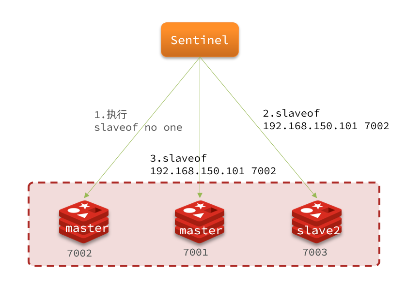
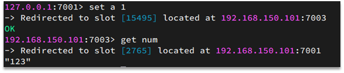
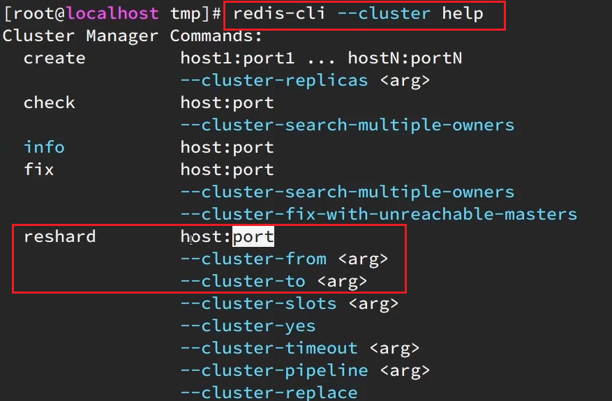
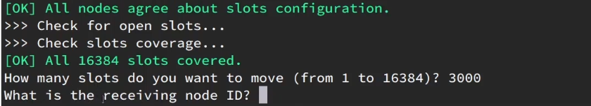
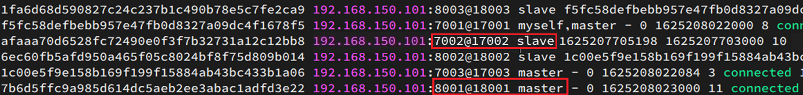
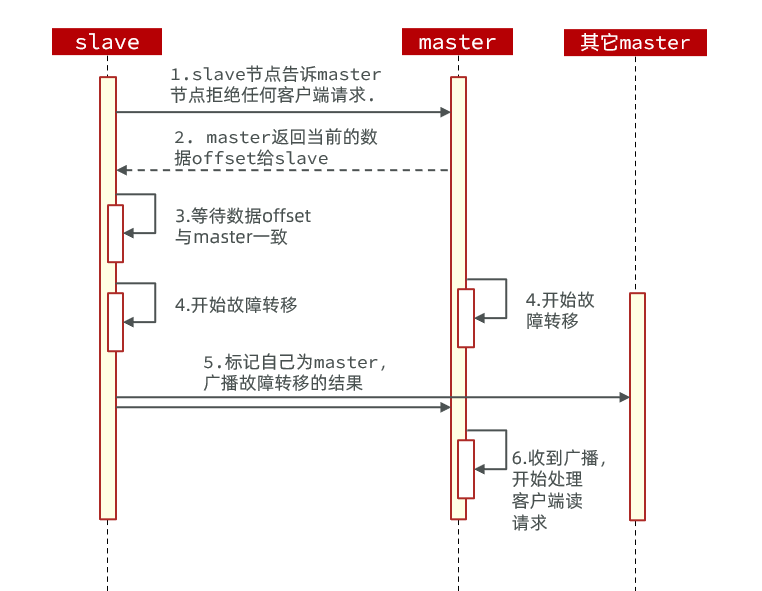

分布式缓存
-- 基于Redis集群解决单机Redis存在的问题
单机的Redis存在四大问题：

0.学习目标
1.Redis持久化
Redis有两种持久化方案：
- RDB持久化
- AOF持久化
1.1.RDB持久化
RDB全称Redis Database Backup file（Redis数据备份文件），也被叫做Redis数据快照。简单来说就是把内存中的所有数据都记录到磁盘中。当Redis实例故障重启后，从磁盘读取快照文件，恢复数据。快照文件称为RDB文件，默认是保存在当前运行目录。
1.1.1.执行时机
RDB持久化在四种情况下会执行：
- 执行save命令
- 执行bgsave命令
- Redis停机时
- 触发RDB条件时
1）save命令
执行下面的命令，可以立即执行一次RDB：

save命令会导致主进程执行RDB，这个过程中其它所有命令都会被阻塞。只有在数据迁移时可能用到。
2）bgsave命令
下面的命令可以异步执行RDB：

这个命令执行后会开启独立进程完成RDB，主进程可以持续处理用户请求，不受影响。
3）停机时
Redis停机时会执行一次save命令，实现RDB持久化。
4）触发RDB条件
Redis内部有触发RDB的机制，可以在redis.conf文件中找到，格式如下：
1# 900秒内，如果至少有1个key被修改，则执行bgsave ， 如果是save "" 则表示禁用RDB2save 900 1 3save 300 10 4save 60 10000
RDB的其它配置也可以在redis.conf文件中设置：
x1# 是否压缩 ,建议不开启，压缩也会消耗cpu，磁盘的话不值钱2rdbcompression yes3
4# RDB文件名称5dbfilename dump.rdb 6
7# 文件保存的路径目录8dir ./
1.1.2.RDB原理
bgsave开始时会fork主进程得到子进程，子进程共享主进程的内存数据。完成fork后读取内存数据并写入 RDB 文件。
fork采用的是copy-on-write技术：
- 当主进程执行读操作时，访问共享内存；
- 当主进程执行写操作时，则会拷贝一份数据，执行写操作。

1.1.3.小结
RDB方式bgsave的基本流程？
- fork主进程得到一个子进程，共享内存空间
- 子进程读取内存数据并写入新的RDB文件
- 用新RDB文件替换旧的RDB文件
RDB会在什么时候执行？save 60 1000代表什么含义？
- 默认是服务停止时
- 代表60秒内至少执行1000次修改则触发RDB
RDB的缺点？
- RDB执行间隔时间长，两次RDB之间写入数据有丢失的风险
- fork子进程、压缩、写出RDB文件都比较耗时
1.2.AOF持久化
1.2.1.AOF原理
AOF全称为Append Only File（追加文件）。Redis处理的每一个写命令都会记录在AOF文件，可以看做是命令日志文件。

1.2.2.AOF配置
AOF默认是关闭的，需要修改redis.conf配置文件来开启AOF：
xxxxxxxxxx41# 是否开启AOF功能，默认是no2appendonly yes3# AOF文件的名称4appendfilename "appendonly.aof"
AOF的命令记录的频率也可以通过redis.conf文件来配：
xxxxxxxxxx61# 表示每执行一次写命令，立即记录到AOF文件2appendfsync always 3# 写命令执行完先放入AOF缓冲区，然后表示每隔1秒将缓冲区数据写到AOF文件，是默认方案4appendfsync everysec 5# 写命令执行完先放入AOF缓冲区，由操作系统决定何时将缓冲区内容写回磁盘6appendfsync no
三种策略对比：

1.2.3.AOF文件重写
因为是记录命令，AOF文件会比RDB文件大的多。而且AOF会记录对同一个key的多次写操作，但只有最后一次写操作才有意义。通过执行bgrewriteaof命令，可以让AOF文件执行重写功能，用最少的命令达到相同效果。

如图，AOF原本有三个命令，但是set num 123 和 set num 666都是对num的操作，第二次会覆盖第一次的值，因此第一个命令记录下来没有意义。
所以重写命令后，AOF文件内容就是：mset name jack num 666
Redis也会在触发阈值时自动去重写AOF文件。阈值也可以在redis.conf中配置：
xxxxxxxxxx41# AOF文件比上次文件 增长超过多少百分比则触发重写2auto-aof-rewrite-percentage 1003# AOF文件体积最小多大以上才触发重写 4auto-aof-rewrite-min-size 64mb
1.3.RDB与AOF对比
RDB和AOF各有自己的优缺点，如果对数据安全性要求较高，在实际开发中往往会结合两者来使用。

2.Redis主从
2.1.搭建主从架构
单节点Redis的并发能力是有上限的，要进一步提高Redis的并发能力，就需要搭建主从集群，实现读写分离。

具体搭建流程参考课前资料《Redis集群.md》：

2.2.主从数据同步原理
2.2.1.全量同步
主从第一次建立连接时，会执行全量同步，将master节点的所有数据都拷贝给slave节点，流程：

这里有一个问题，master如何得知salve是第一次来连接呢？？
有几个概念，可以作为判断依据：
- Replication Id：简称replid，是数据集的标记，id一致则说明是同一数据集。每一个master都有唯一的replid，slave则会继承master节点的replid
- offset：偏移量，随着记录在repl_baklog中的数据增多而逐渐增大。slave完成同步时也会记录当前同步的offset。如果slave的offset小于master的offset，说明slave数据落后于master，需要更新。
因此slave做数据同步，必须向master声明自己的replication id 和offset，master才可以判断到底需要同步哪些数据。
因为slave原本也是一个master，有自己的replid和offset，当第一次变成slave，与master建立连接时，发送的replid和offset是自己的replid和offset。
master判断发现slave发送来的replid与自己的不一致，说明这是一个全新的slave，就知道要做全量同步了。
master会将自己的replid和offset都发送给这个slave，slave保存这些信息。以后slave的replid就与master一致了。
因此，master判断一个节点是否是第一次同步的依据，就是看replid是否一致。
如图：

完整流程描述：
- slave节点请求增量同步
- master节点判断replid，发现不一致，拒绝增量同步
- master将完整内存数据生成RDB，发送RDB到slave
- slave清空本地数据，加载master的RDB
- master将RDB期间的命令记录在repl_baklog，并持续将log中的命令发送给slave
- slave执行接收到的命令，保持与master之间的同步
2.2.2.增量同步
全量同步需要先做RDB，然后将RDB文件通过网络传输个slave，成本太高了。因此除了第一次做全量同步，其它大多数时候slave与master都是做增量同步。
什么是增量同步？就是只更新slave与master存在差异的部分数据。如图：

那么master怎么知道slave与自己的数据差异在哪里呢?
2.2.3.repl_backlog原理
master怎么知道slave与自己的数据差异在哪里呢?
这就要说到全量同步时的repl_baklog文件了。
这个文件是一个固定大小的数组，只不过数组是环形，也就是说角标到达数组末尾后，会再次从0开始读写，这样数组头部的数据就会被覆盖。
repl_baklog中会记录Redis处理过的命令日志及offset，包括master当前的offset，和slave已经拷贝到的offset：

slave与master的offset之间的差异，就是salve需要增量拷贝的数据了。
随着不断有数据写入，master的offset逐渐变大，slave也不断的拷贝，追赶master的offset：

直到数组被填满：

此时，如果有新的数据写入，就会覆盖数组中的旧数据。不过，旧的数据只要是绿色的，说明是已经被同步到slave的数据，即便被覆盖了也没什么影响。因为未同步的仅仅是红色部分。
但是，如果slave出现网络阻塞，导致master的offset远远超过了slave的offset：

如果master继续写入新数据，其offset就会覆盖旧的数据，直到将slave现在的offset也覆盖：

棕色框中的红色部分，就是尚未同步，但是却已经被覆盖的数据。此时如果slave恢复，需要同步，却发现自己的offset都没有了，无法完成增量同步了。只能做全量同步。

2.3.主从同步优化
主从同步可以保证主从数据的一致性，非常重要。
可以从以下几个方面来优化Redis主从就集群：
- 在master中配置repl-diskless-sync yes启用无磁盘复制，避免全量同步时的磁盘IO。
- Redis单节点上的内存占用不要太大，减少RDB导致的过多磁盘IO
- 适当提高repl_baklog的大小，发现slave宕机时尽快实现故障恢复，尽可能避免全量同步
- 限制一个master上的slave节点数量，如果实在是太多slave，则可以采用主-从-从链式结构，减少master压力
主从从架构图：

2.4.小结
简述全量同步和增量同步区别？
- 全量同步：master将完整内存数据生成RDB，发送RDB到slave。后续命令则记录在repl_baklog，逐个发送给slave。
- 增量同步：slave提交自己的offset到master，master获取repl_baklog中从offset之后的命令给slave
什么时候执行全量同步？
- slave节点第一次连接master节点时
- slave节点断开时间太久，repl_baklog中的offset已经被覆盖时
什么时候执行增量同步？
- slave节点断开又恢复，并且在repl_baklog中能找到offset时
3.Redis哨兵
Redis提供了哨兵（Sentinel）机制来实现主从集群的自动故障恢复。
3.1.哨兵原理
3.1.1.集群结构和作用
哨兵的结构如图：

哨兵的作用如下：
- 监控：Sentinel 会不断检查您的master和slave是否按预期工作
- 自动故障恢复：如果master故障，Sentinel会将一个slave提升为master。当故障实例恢复后也以新的master为主
- 通知：Sentinel充当Redis客户端的服务发现来源，当集群发生故障转移时，会将最新信息推送给Redis的客户端
3.1.2.集群监控原理
Sentinel基于心跳机制监测服务状态，每隔1秒向集群的每个实例发送ping命令：
•主观下线：如果某sentinel节点发现某实例未在规定时间响应，则认为该实例主观下线。
•客观下线：若超过指定数量（quorum）的sentinel都认为该实例主观下线，则该实例客观下线。quorum值最好超过Sentinel实例数量的一半。

3.1.3.集群故障恢复原理
一旦发现master故障，sentinel需要在salve中选择一个作为新的master，选择依据是这样的：
- 首先会判断slave节点与master节点断开时间长短，如果超过指定值（down-after-milliseconds * 10）则会排除该slave节点
- 然后判断slave节点的slave-priority值，越小优先级越高，如果是0则永不参与选举
- 如果slave-prority一样，则判断slave节点的offset值，越大说明数据越新，优先级越高
- 最后是判断slave节点的运行id大小，越小优先级越高。
当选出一个新的master后，该如何实现切换呢？
流程如下：
- sentinel给备选的slave1节点发送slaveof no one命令，让该节点成为master
- sentinel给所有其它slave发送slaveof 192.168.150.101 7002 命令，让这些slave成为新master的从节点，开始从新的master上同步数据。
- 最后，sentinel将故障节点标记为slave，当故障节点恢复后会自动成为新的master的slave节点

3.1.4.小结
Sentinel的三个作用是什么？
- 监控
- 故障转移
- 通知
Sentinel如何判断一个redis实例是否健康？
- 每隔1秒发送一次ping命令，如果超过一定时间没有相向则认为是主观下线
- 如果大多数sentinel都认为实例主观下线，则判定服务下线
故障转移步骤有哪些？
- 首先选定一个slave作为新的master，执行slaveof no one
- 然后让所有节点都执行slaveof 新master
- 修改故障节点配置，添加slaveof 新master
3.2.搭建哨兵集群
具体搭建流程参考课前资料《Redis集群.md》：

3.3.RedisTemplate
在Sentinel集群监管下的Redis主从集群，其节点会因为自动故障转移而发生变化，Redis的客户端必须感知这种变化，及时更新连接信息。Spring的RedisTemplate底层利用lettuce实现了节点的感知和自动切换。
下面，我们通过一个测试来实现RedisTemplate集成哨兵机制。
3.3.1.导入Demo工程
首先，我们引入课前资料提供的Demo工程：

3.3.2.引入依赖
在项目的pom文件中引入依赖：
xxxxxxxxxx41<dependency>2 <groupId>org.springframework.boot</groupId>3 <artifactId>spring-boot-starter-data-redis</artifactId>4</dependency>
3.3.3.配置Redis地址
然后在配置文件application.yml中指定redis的sentinel相关信息：
xxxxxxxxxx81spring:2 redis:3 sentinel:4 master: mymaster5 nodes:6 - 192.168.150.101:270017 - 192.168.150.101:270028 - 192.168.150.101:27003
3.3.4.配置读写分离
在项目的启动类中，添加一个新的bean：
xxxxxxxxxx41public LettuceClientConfigurationBuilderCustomizer clientConfigurationBuilderCustomizer(){3 return clientConfigurationBuilder -> clientConfigurationBuilder.readFrom(ReadFrom.REPLICA_PREFERRED);4}
这个bean中配置的就是读写策略，包括四种：
- MASTER：从主节点读取
- MASTER_PREFERRED：优先从master节点读取，master不可用才读取replica
- REPLICA：从slave（replica）节点读取
- REPLICA _PREFERRED：优先从slave（replica）节点读取，所有的slave都不可用才读取master
4.Redis分片集群
4.1.搭建分片集群
主从和哨兵可以解决高可用、高并发读的问题。但是依然有两个问题没有解决：
- 海量数据存储问题
- 高并发写的问题
使用分片集群可以解决上述问题，如图:

分片集群特征：
- 集群中有多个master，每个master保存不同数据
- 每个master都可以有多个slave节点
- master之间通过ping监测彼此健康状态
- 客户端请求可以访问集群任意节点，最终都会被转发到正确节点
具体搭建流程参考课前资料《Redis集群.md》：

4.2.散列插槽
4.2.1.插槽原理
Redis会把每一个master节点映射到0~16383共16384个插槽（hash slot）上，查看集群信息时就能看到：

数据key不是与节点绑定，而是与插槽绑定。redis会根据key的有效部分计算插槽值，分两种情况：
- key中包含"{}"，且“{}”中至少包含1个字符，“{}”中的部分是有效部分
- key中不包含“{}”，整个key都是有效部分
例如：key是num，那么就根据num计算，如果是{itcast}num，则根据itcast计算。计算方式是利用CRC16算法得到一个hash值，然后对16384取余，得到的结果就是slot值。

如图，在7001这个节点执行set a 1时，对a做hash运算，对16384取余，得到的结果是15495，因此要存储到103节点。
到了7003后，执行get num时，对num做hash运算，对16384取余，得到的结果是2765，因此需要切换到7001节点
4.2.1.小结
Redis如何判断某个key应该在哪个实例？
- 将16384个插槽分配到不同的实例
- 根据key的有效部分计算哈希值，对16384取余
- 余数作为插槽，寻找插槽所在实例即可
如何将同一类数据固定的保存在同一个Redis实例？
- 这一类数据使用相同的有效部分，例如key都以{typeId}为前缀
4.3.集群伸缩
redis-cli --cluster提供了很多操作集群的命令，可以通过下面方式查看：

比如，添加节点的命令：

4.3.1.需求分析
需求：向集群中添加一个新的master节点，并向其中存储 num = 10
- 启动一个新的redis实例，端口为7004
- 添加7004到之前的集群，并作为一个master节点
- 给7004节点分配插槽，使得num这个key可以存储到7004实例
这里需要两个新的功能：
- 添加一个节点到集群中
- 将部分插槽分配到新插槽
4.3.2.创建新的redis实例
创建一个文件夹：
xxxxxxxxxx11mkdir 7004拷贝配置文件：
xxxxxxxxxx11cp redis.conf /7004修改配置文件：
xxxxxxxxxx11sed /s/6379/7004/g 7004/redis.conf启动
xxxxxxxxxx11redis-server 7004/redis.conf
4.3.3.添加新节点到redis
添加节点的语法如下：
执行命令：
xxxxxxxxxx11redis-cli --cluster add-node 192.168.150.101:7004 192.168.150.101:7001
通过命令查看集群状态：
xxxxxxxxxx11redis-cli -p 7001 cluster nodes
如图，7004加入了集群，并且默认是一个master节点：

但是，可以看到7004节点的插槽数量为0，因此没有任何数据可以存储到7004上
4.3.4.转移插槽
我们要将num存储到7004节点，因此需要先看看num的插槽是多少：

如上图所示，num的插槽为2765.
我们可以将0~3000的插槽从7001转移到7004，命令格式如下：

具体命令如下：
建立连接：

得到下面的反馈：

询问要移动多少个插槽，我们计划是3000个：
新的问题来了：

那个node来接收这些插槽？？
显然是7004，那么7004节点的id是多少呢？

复制这个id，然后拷贝到刚才的控制台后：

这里询问，你的插槽是从哪里移动过来的？
- all：代表全部，也就是三个节点各转移一部分
- 具体的id：目标节点的id
- done：没有了
这里我们要从7001获取，因此填写7001的id：

填完后，点击done，这样插槽转移就准备好了：

确认要转移吗？输入yes：
然后，通过命令查看结果：

可以看到：

目的达成。
4.4.故障转移
集群初识状态是这样的：

其中7001、7002、7003都是master，我们计划让7002宕机。
4.4.1.自动故障转移
当集群中有一个master宕机会发生什么呢？
直接停止一个redis实例，例如7002：
xxxxxxxxxx11redis-cli -p 7002 shutdown
1）首先是该实例与其它实例失去连接
2）然后是疑似宕机：

3）最后是确定下线，自动提升一个slave为新的master：

4）当7002再次启动，就会变为一个slave节点了：

4.4.2.手动故障转移
利用cluster failover命令可以手动让集群中的某个master宕机，切换到执行cluster failover命令的这个slave节点，实现无感知的数据迁移。其流程如下：

这种failover命令可以指定三种模式：
- 缺省：默认的流程，如图1~6歩
- force：省略了对offset的一致性校验
- takeover：直接执行第5歩，忽略数据一致性、忽略master状态和其它master的意见
案例需求：在7002这个slave节点执行手动故障转移，重新夺回master地位
步骤如下：
1）利用redis-cli连接7002这个节点
2）执行cluster failover命令
如图：

效果：
4.5.RedisTemplate访问分片集群
RedisTemplate底层同样基于lettuce实现了分片集群的支持，而使用的步骤与哨兵模式基本一致：
1）引入redis的starter依赖
2）配置分片集群地址
3）配置读写分离
与哨兵模式相比，其中只有分片集群的配置方式略有差异，如下：
xxxxxxxxxx101spring2 redis3 cluster4 nodes5192.168.150.101:70016192.168.150.101:70027192.168.150.101:70038192.168.150.101:80019192.168.150.101:800210192.168.150.101:8003